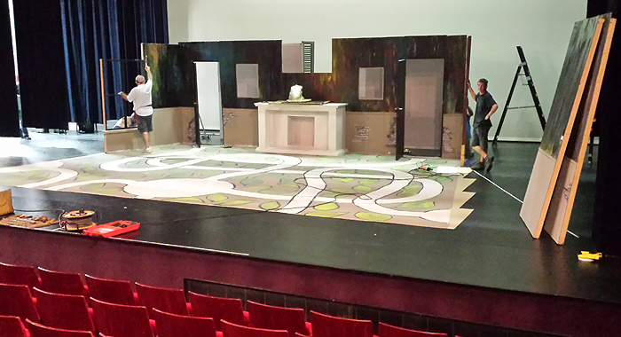
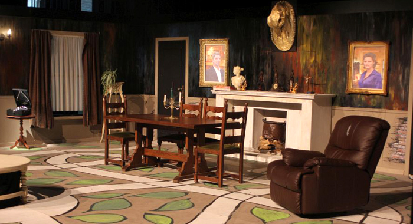
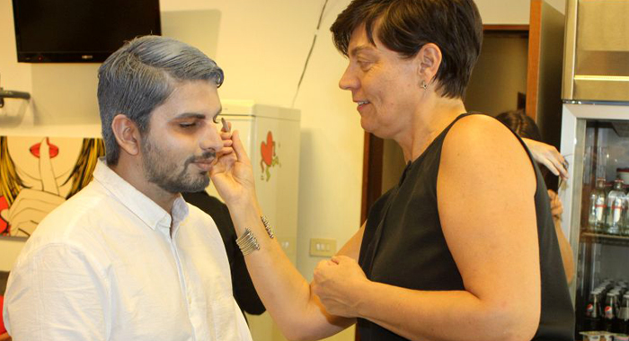
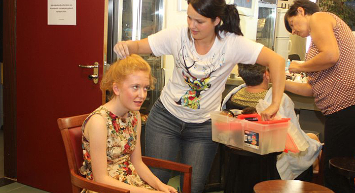
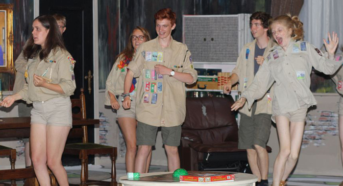
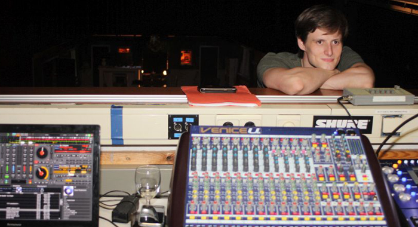
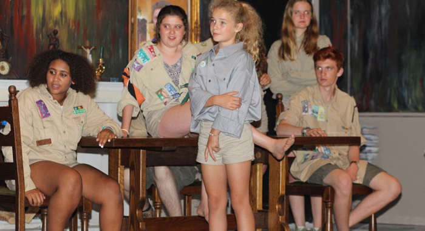
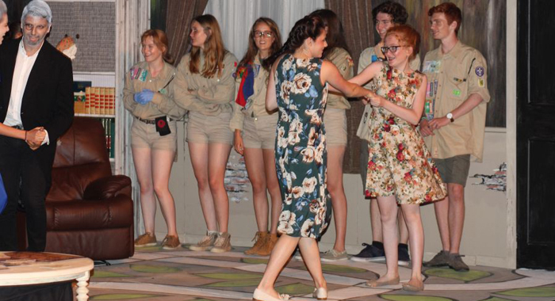
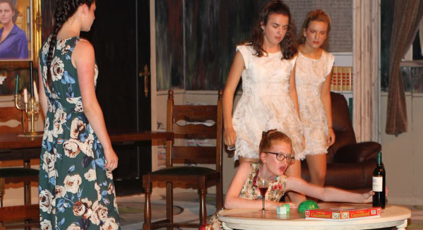

Toneelkring de Vondeling Don Bosco Torhout
Toneelkring de Vondeling is een enthousiaste groep toneelspelers die met een drang naar perfectie het beste van zichzelf geven!
Romeo & Julia
|
In september 2017 bracht "De Vondeling" de klassieker "Romeo & Julia". Het was een gedurfd project, dat ze met groot succes tot een goed einde brachten
Korte beschrijving van het stuk:
Verona, Italië. Twee hoogstaande families, de Montacchi's en de Capuletti's, zijn verwikkeld in een eeuwenoude vete. Zo erg dat er een wet wordt ingevoerd die elk openbaar gevecht zwaar zal straffen. Een verzoeningspoging wordt ondernomen . Hierbij leren Romeo Montacchi en Julia Capulletti elkaar kennen. Maar is er plaats voor liefde tussen alle haat? Of eindigt dit romantisch verhaal in een drama? Dit is het klassieke verhaal van William Shakespeare , in een bewerking van Dirk Tanghe . Het stuk wordt gebracht onder leiding van regisseur John Schouppe. Dit in samenwerking met vocaal ensemble Eufonia en de band The Crew.
Cast: Matthias Bruynooghe, Brecht Coppers, Kimberley Deneve, lbe Fraeyman, Helena Gyselinck, Jonas Hoste, Saarlot Huyghebaert, Martje Jaques, Eva Nijborg, Merlijn Nolf, Fran Pecceu, Sien Rotty, Lowie Swyngedouw, Hanne Teerlinck, Elien Van Aerde, Cédric Vanbecelaere, Yaara Vanhecke en Kenneth van Maele
Regie: John Schouppe.
|
HET JUMANJI MYSTERIE

- 
- 
- 
- 
- 
- 

- 
- 
- 
Toneelkring De Vondeling bracht in 2016 de jongerenproductie "Het Jumanji Mysterie".
In dit mysterieus verhaal komt een scoutsgroep op kamp in een verlaten herenhuis terecht. Daar treffen ze het Jumanjibord dat hen terugbrengt naar de tijd van WOII. Kunnen ze het Jumanji Mysterie ontrafelen en de geesten tot rust brengen? Het is de enige manier om terug thuis te komen…
Dit was de cast voor de productie van "Het Jumanji Mysterie":
Evy Bert, Sophia Brovko, Mathea Cambier, Lauranne Cleenwerck, Gianni Deblaere, Lize Demets, Robin Denijs, Beza Depoorter, Jevve Dewulf, Anna Falk, Ibe Fraeyman, Yoëlle Geeraert, Jonas Hoste, Fran Pecceu, Madeleine Pollet, Sien Rotty, Matthias Bruynooghe, Bernt Sales, Alice Trio, Elien Van Aerde, Bo Verschaeve, Britt Werkbrouck, Tine Hansebout
Regie:
Matthijs Vandekinderen
Jongerenproductie "Wonderland"
|
In september 2015 bracht "De Vondeling" haar eerste jeugdproductie, het was een groot succes
Korte beschrijving van het stuk:
"150 jaar geleden, een warme lentedag. Alice Liddell, en haar 2 zusjes luisteren gefascineerd naar een verhaal dat hen verteld wordt door Lewis Carroll. Een verhaal over een konijn met een horloge in zijn zak, over een gekke hoedenmaker, een grappige tweeling, een grijzende kat. Over een plek waarin een boze koningin kaartenmensen onthoofdt, en bloemen hooikoorts hebben. Een wonderlijke wereld komt tot leven…
Hoe zou het ondertussen zijn met die vreemde, verwarrende wereld waarin niets is wat het lijkt, en alles is wat het niet is, vroeg de Vondeling zich af. Niet zo goed, zo blijkt. Wonderland is vervaagd, ingeslapen, vastgelopen. Wonderland is vergeten… Of niet?"
"Wonderland" werd tot leven gebracht door: Delphine Castryck, Esther D’Haeninck, Nivine Declercq, Beza Depoorter, Emma Dewulf, Anna Falk, Femke Gevaert, Fran Pecceu, Jolien Spillier, Elien Van Aerde en Lore van Parys in regie van Gert De la Marche.
|